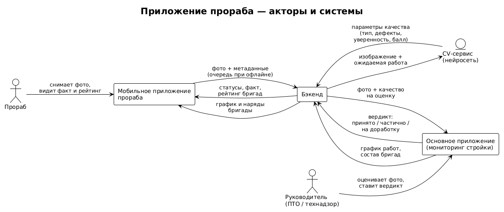
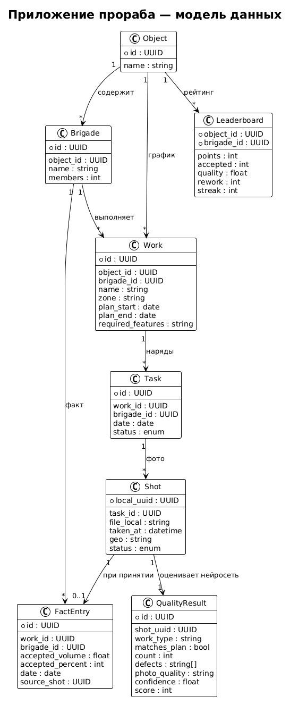
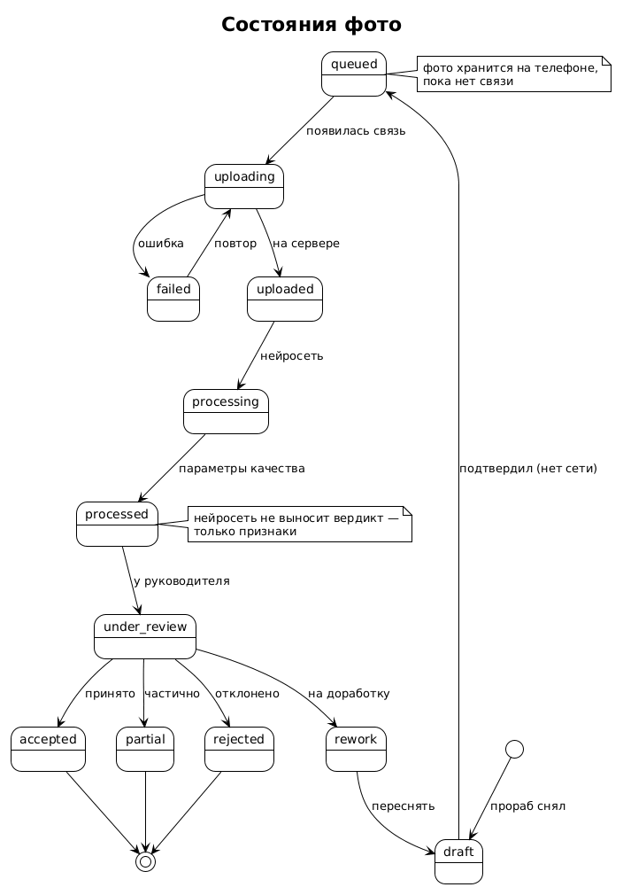

Для кого: команда (бэк, фронт, ML, презентация). Связанные документы:
TZ.md,docs/REQUIREMENTS.md, основное приложение мониторинга.
Мобильное приложение для прораба, которое: - получает график работ из основного приложения (мониторинга стройки); - позволяет быстро сфотографировать результат работы (например, установку дверей); - работает без интернета: фото хранится на телефоне и досылается позже; - передаёт фото в нейросеть, а её параметры качества — в основное приложение; - после оценки руководителя формирует график фактически выполненных работ; - показывает соревнование бригад на объекте.

| Актор / система | Роль |
|---|---|
| Прораб | снимает фото, ведёт свой факт, видит соревнование |
| Руководитель | оценивает фото, ставит вердикт |
| Мобильное приложение | съёмка, офлайн-очередь, факт, рейтинг |
| Бэкенд | приём фото, связь с нейросетью и основным приложением |
| CV-сервис (нейросеть) | распознаёт работу, отдаёт параметры качества |
| Основное приложение | источник графика, приёмка, факт, рейтинг |

Ключ идемпотентности: Shot.local_uuid генерируется на телефоне. Одно фото не отправится дважды и не потеряется.
queued), к нему привязаны задача, время, гео.
| Состояние | Значение |
|---|---|
draft |
снято, не подтверждено к отправке |
queued |
в локальной очереди (нет сети) |
uploading / failed |
отправляется / ошибка (повтор) |
uploaded / processing / processed |
на сервере / нейросеть / есть качество |
under_review |
у руководителя |
accepted / partial / rework / rejected |
вердикт |
Правило: фото никогда не удаляется при неудаче — только повтор.
local_uuid, повтор с экспоненциальной задержкой.local_uuid не создаёт дубль.Нейросеть получает фото + ожидаемую работу и возвращает:
| Параметр | Пример |
|---|---|
work_type |
«установка дверей» |
matches_plan |
да / нет / не уверен |
count |
3 двери |
defects[] |
«зазор», «перекос», «не закончено» |
photo_quality |
«размыто», «темно», «издалека» |
confidence |
0.0–1.0 |
score |
0–100 |
Правило: нейросеть даёт признаки, а не вердикт. Решение — за руководителем (принцип основного приложения: «система фиксирует, не утверждает»).
FactEntry, обновляется факт в основном приложении (Ось 2 «отчётность»), начисляются баллы.Связка с основным приложением: фото + оценка = доказательство для правила R6 «ложное завершение» (заявлено 100 %, подтверждения нет).
Простая лента по дням, статусы: не начато · в работе · на проверке · принято (+ «на доработку»).
Сегодня, 21 сентября
✅ Установка дверей, зона 2 принято · 12:40
⏳ Бетонирование, секция C на проверке
🔁 Армирование, зона A на доработку (переснять)
• Котлован, зона B не начато
Проценты и суммы считает система — прораб их не заполняет.
Бригада Принято Качество Баллы
Бригада №2 14 92% 178
Бригада №1 (мы) 12 88% 150
Бригада №3 9 75% 104
Метрики: accepted, quality, timeliness, rework (штраф), streak (дней без брака).
Формула (пример):
points = accepted × 10 + quality_bonus − rework × 5
Этика: видно работы и зоны других бригад, но без фото и личных данных — соревнование, а не слежка.
Правило дизайна: на главном экране одно действие — фото. Остальное — просмотр.
Скачивание (сервер → телефон):
GET /api/foreman/object/{id}/schedule?brigade_id=...&date=...
GET /api/foreman/leaderboard?object_id=...
Загрузка (телефон → сервер):
POST /api/foreman/shots # multipart: фото + метаданные
{ local_uuid, task_id, taken_at, geo }
→ 201 { server_id, status: "uploaded" }
Статусы (телефон ← сервер):
GET /api/foreman/shots/status?uuids=...
→ [{ local_uuid, status, quality_result?, verdict? }]
Обязательно: идемпотентность по local_uuid; сервер не создаёт дубли.
| Случай | Решение |
|---|---|
| Фото без выбранной работы | привязать к ближайшей задаче дня или «прочее» — не терять |
| Нейросеть не распознала | «не уверен» → руководитель решает вручную |
| Вердикт «на доработку» | задача возвращается с причиной и штрафом |
| Дубль фото | отсекается по local_uuid |
| Долго нет сети | фото копятся; предупреждение о заполнении памяти |
| Появилась связь | батч-отправка |
| Закрыто в графике, фото нет | сценарий «ложное завершение» |
Код PlantUML для рендера: docs/diagrams/
- foreman-actors.puml — акторы и системы
- foreman-data-model.puml — модель данных
- foreman-photo-lifecycle.puml — жизненный цикл фото
Отрендерить: вставить на https://www.plantuml.com/plantuml/uml/ или в расширение PlantUML (VS Code).